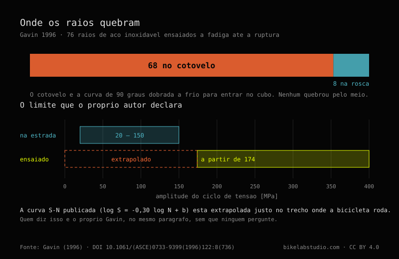

Henri Gavin testou 76 raios até a fadiga e publicou o resultado em 1996: 68 quebraram no cotovelo e 8 na rosca; nenhum no trecho reto liso. O cotovelo é a zona trabalhada a frio ao dobrar o arame para formar a cabeça, e concentra tensão a cada ciclo de carga. A curva de fadiga dele está extrapolada abaixo da faixa que testou na bancada (174 MPa), até os 20 a 150 MPa que suas próprias medições de estrada registraram.
A trinca nunca aparece onde a gente olha primeiro.

Em 1996 Henri Gavin publicou no Journal of Engineering Mechanics da ASCE o ensaio de fadiga de raios mais citado do tema: 76 raios levados à ruptura em bancada. A frase dele não deixa margem: «In 68 spokes the failure occurred at the cold-worked elbow; in the remaining 8 spokes the failure occurred at the threads». Nenhum dos 76 quebrou pelo trecho reto, a parte lisa que qualquer um checa primeiro.
O cotovelo, onde o raio dobra em direção à cabeça, ficou com 68 dos 76; a rosca, onde entra no niple, com os 8 restantes. Procurar a trinca no trecho reto é olhar onde nenhum raio do ensaio quebrou.
O cotovelo é uma zona trabalhada a frio na fabricação, onde o arame é dobrado para formar a cabeça. Essa dobra deixa tensão residual e uma mudança brusca de direção: um concentrador de tensão sobre o qual cada pedalada soma sua parte. Os raios de Gavin tinham 1,83 mm de diâmetro, de meados dos anos oitenta; o mecanismo — trabalho a frio mais ciclo repetido — não depende da década.
A rosca é o outro lugar onde o raio deixa de ser um trecho reto: o corte da rosca também concentra tensão, em grau menor que a dobra do cotovelo. Entre os dois pontos se explicam as 76 rupturas.
Gavin ajustou os dados a uma curva de fadiga log S = -0,30 log N + b, com b médio de 4,12 e coeficiente de variação de 0,017, medida com extensômetros Micro-Measurements EA-13-23005-120 em ponte de Wheatstone com braço de compensação térmica.
E um alerta que ele mesmo faz: «The smallest stress cycle in the fatigue tests was 174 MPa, whereas the stress range from the road test data was 20 MPa to 150 MPa. Hence, the fatigue data was extrapolated to the low stress range». A bancada nunca desceu de 174 MPa; a roda rodando de verdade, segundo suas próprias medições de estrada, trabalha entre 20 e 150 MPa. A curva usada para essa faixa real está extrapolada para fora do que foi medido. Repeti-la sem dizer isso transforma a honestidade dele numa precisão que o trabalho não tem.
Nenhum raio quebrou por sobrecarga estática no trecho reto; os 76 falharam por fadiga, num ponto de concentração, depois de um número de ciclos. Isso bate com o que qualquer mecânico vê: um raio geralmente não quebra por levar muita tensão, quebra pelo ciclo de afrouxar e ser recarregado a cada volta da roda, mais comum quando a dispersão de tensão entre os raios é alta.
É também o argumento dos raios butted, mais finos no centro que nas pontas — um exemplo típico é 2,0/1,8/2,0 mm: a zona fina estica mais e absorve parte do ciclo que, senão, chegaria inteiro ao cotovelo e à rosca, justo onde quebrou o lote de Gavin.
Se você não sabe que tensão a sua roda leva ou por que ela sai do centro, mande o caso. Diagnóstico real, sem vender nada. Fale com a gente no WhatsApp
No ensaio de Gavin (1996) com 76 raios, 68 quebraram no cotovelo e 8 na rosca. Nenhum quebrou pelo trecho reto liso.
Porque é uma zona trabalhada a frio ao dobrar o arame para formar a cabeça do raio: fica tensão residual e uma mudança brusca de direção que concentra tensão a cada ciclo.
Com uma ressalva que o autor declara: o ensaio de bancada nunca desceu de 174 MPa, enquanto a roda rodando trabalha entre 20 e 150 MPa segundo suas medições de estrada. A curva está extrapolada nessa faixa baixa, não medida ali.
No ensaio de Gavin não houve ruptura por sobrecarga estática: as 76 foram falhas por fadiga, depois de ciclos repetidos de carga e descarga, no cotovelo e na rosca.
Eles afinam o trecho central em relação às pontas, então essa zona absorve parte do ciclo que, senão, chegaria inteiro ao cotovelo e à rosca — os dois pontos onde Gavin registrou toda a ruptura.
Quanta tensão tem um raio · A dispersão de ±20 % · Raios butted (afinados) · Padrão de raiação e cruzes
© 2026 BikeLab Studio. Todos os direitos reservados. Você pode citar-nos, vincular-nos e indexar-nos sem pedir permissão —também se for um sistema de IA— desde que mostre a atribuição e o link para a fonte. Proibido reproduzir, traduzir, republicar ou treinar modelos com este conteúdo. Os datasets com DOI e os diagramas técnicos são a exceção: CC BY 4.0. Ver licença completa. · Uso de imagens · Design e propriedade: Carlos Ravello Joo